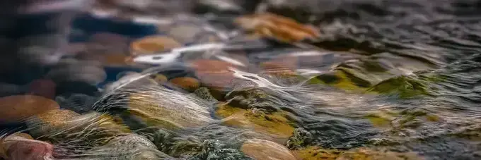

I’ve been tinkering around with livestreaming and wanted to document some of the things I found. The experiment has been to stream to both Twitch and YouTube starting with just one or the other and eventually to both at the same time.
First, lets talk audio. I’ve spent far too much time adjusting the audio for both personal streaming and for work. Current setup utilizes virtual cables and obs studio filters to achieve what I think is pretty good sounding audio. I’ve primarily been following EposVox audio quality guides.
I’m using a shock mounted Yeti Blue microphone and passing it throught Noise Suppression using the built in RNNoise method. I haven’t noticed any CPU impact and this works so well. I have the gain on the microphone down very low but I’ve turned the digital gain boosted by 10 dB. This can sound weird without additional filtering but increases my volume without having to be right on top of the microphone.
Next there are a few rounds of correcting for that initial gain boosting and making things sound good. The first round of EQ that uses ReaEQ mostly to cut highs, lows, and a few nasaly places in the mids. This is followed up with a compressor with a 3:1 ratio and a -20dB threshold. From there I do have a Noise Gate set but I’m not sure if it is strictly necessary with all the other things happening. Lastly, there is an additional EQ for some high end and normal speaking range boosting for clarity and to add interest.
For the camera side I have a Razer Kiyo that has most of the default settings but with the white balance manually adjusted. It never quite gets that right and I haven’t found the right filters to counter it consistently. I do typically increase the contrast a little and apply a LUT. This is mostly to add back in some warmth as the default settings can read a bit cold. One thing I wanted to add is that the camera in obs has its own dedicated scene that is then added to other scenes to enable different presentation of the same source. I was running into an issue where changing it on one scene would change it in every scene. This is apparently a known thing about obs but it did cause some confusion.
The baked in streaming setup for OBS is so good it doesn’t typically need to be tweaked. I spent the beter part of the last year streaming exclusively to twitch. This is for a few reasons. First, up until recently it was against twitch’s terms of service to stream to more than one platform. Also, for whatever reason I associate twitch with streaming more than YouTube.
I have been experimenting doing both lately but have determined the only way for me to do that is to use a third party. Specifically, I’ve been using Restream to simultaneously stream to both twitch and YouTube. My upload bandwith is not good so I cannot support both at the same time myself. Setting these up is no more complicated than setting up accounts at each and giving access to Restream. The most complicated piece is setting some of the bitrate and sizing information that will work for both. My current setup is not as good for YouTube as it could be due to the limitations coming from twitch.
I stream infrequently, but when I do it’s at either EntropyGrows Twitch or EntropyGrows YouTube
The image above is from Photo by Raphael Schaller on Unsplash.